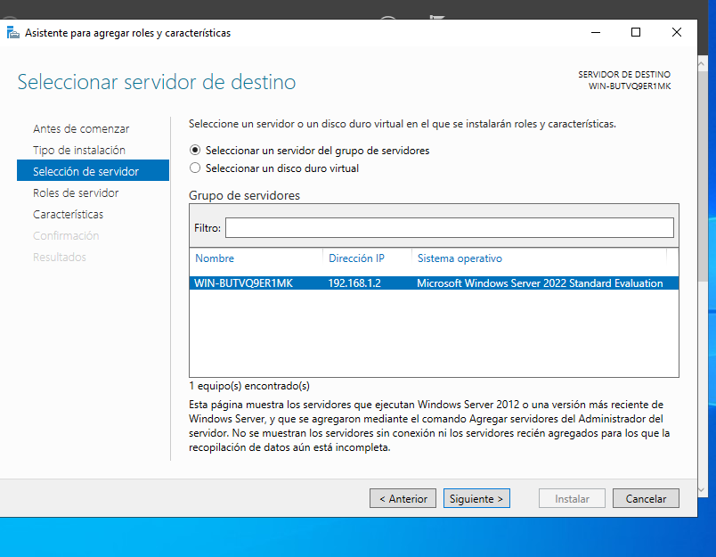

Sprint 3
Instal·lació dimini AD
En primer lloc posem xarxa NAT per poder conectar maquines.
Cambiem la ip del servidor.

Compodem observar se ha cambiar correctament.
Nem a agregar roles.

Seguinte.
Seguinte.

Seleccionem el nostre servidor. 
Seleccionem de mes el servidor DNS.

I aquestes tres caracteristicas.

Confiremem i instal·lem.

I finalment els resultats.

I nem a implementar el domini, posem el nom del domini.

aqui la contra.
La NETBIOS.
Seguinete.
Revisem els que hem fet i seguiente.

I finalment instal·lem.

Com podem observar tot esta correcte.

Verifiquem que som administradors.

Unir equips al domini
En la maquina client també posem xaraxNAT i cambien la ip.

Verifiquem.
fem un ping a la maquina servidor.

Acceidm al domini.
Com podem observar un error que he fet es que a la cap. anterior he fet un domini que no existeix, en canvi ara he fet el que si i co podem observar funciona.

Gestió del domini AD
Ara agragarem usuaris.
Primer usuari.
Amb la seva contra.

 Verifiquem que se ha instal·lat correctament.
Verifiquem que se ha instal·lat correctament.

Accedim.
I verifiquem que estem dins.

Ara creem un grup.
Posem el nom i accpetem.

Agreguem els usuaris al grup.

i posem el admin.

Ara tenim les UO.

Que es jugadors.

i agreguem els usuaris.

GPOs
Ara configurarem les GPOs.

Le posem el nom i accpetem.
I editem.
La primera Gpo que volia fer es que quan un usuari insicia sisió aparegue aquest text a la pantalla.

Com a segion GPO es que es cambia el fondo de pantalla.
Verifiquem que s'ha instal·lat correctament.

fem un gpupdate per actualitzar la configuració.
i com podem observar el fondo de pantalla es negre ja que la .png que hem posat es aixins.

Aqui podem veure el fondo fet en paint.